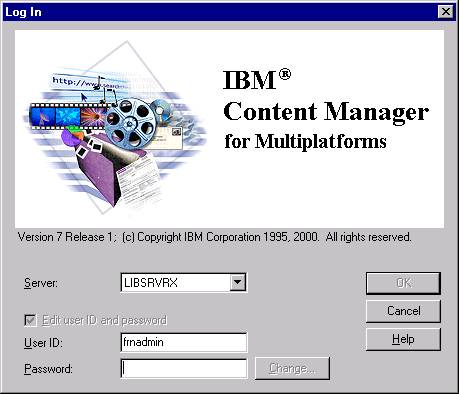
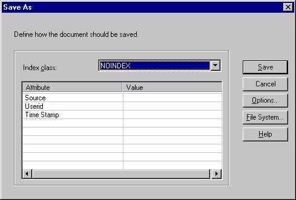

Summary:
This is the supporting analysis of an Outlook 2002 attempted to Save via ODMA.
Contributors
Change History
An ODMA log file (here,
X020501d.txt) has been obtained for the failing scenario. This log file is decomposed and annotated request-by-request in the following sections.
The log begins with Outlook's registration of itself as an ODMA-aware application. If Outlook is unable to access the ODMA Connection Manager's
ODMRegisterAppoperation, it must simply operate as if there is no DMS to be used. On successfully making a request (as confirmed by the log being created), the continuation depends on the results delivered by each operation.ODMRegisterApp Input parameters: version=100(64) lpszAppId=MSOutlook; dwEnvData=5309080(510298) Output parameters: odmHandle=71895248(44908d0) Return value=0(0)
- Microsoft Outlook 2002 invokes
ODMRegisterAppto establish operation with the default ODMA DMS that is available for it to use.- Outlook identifies itself as "
MSOutlook".- Outlook specifies that it requires ODMA 1.0 functionality (
version=100) and no more. This provides maximum interoperability with all versions of ODMA and with all DMS integrations.- There is a default DMS available for Outlook 2002. ODMA returns a handle for Outlook to use in further operations with ODMA and specifies an
ODM_SUCCESSreturn value.The DMS is also initialized for a session of operation with Outlook. Generally, there is no user interaction required because no managed-document operations have yet occurred. Some DMS integrations may require that the user be authenticated at this point, although there might not be any meaningful DMS accesses in this session.
When a File / Save As ... or similar menu option occurs in an application, there is a sequence of ODMA operations that must be performed before a document is fully created in the DMS. The first step is ODMA operation
ODMNewDoc:ODMNewDoc Input parameters: odmHandle=71895248(44908d0) dwFlags=16(10) lpszFormat=.txt; lpszDocLocation=Not Defined Output parameters: lpszDocId=::ODMA\FRNODMA\; Return value=0(0)
- In order to create a document for the first time, it is necessary to first tell the DMS that a new document is to be prepared for. This is accomplished by requesting the ODMA
ODMNewDocoperation. TheODMRegisterApp-returnedodmHandleis provided toODMNewDocas identification of the ODMA session that the request is on behalf of.- Outlook specifies a
dwFlagsvalue of 16 (ODM_SILENT), signifying that the DMS should respond silently with a new document without interacting with the user. This is typical.- Outlook specifies that the new document will (likely) be in
.txtformat.- Outlook indicates (by having
lpszDocLocationnot defined --NULL) that it has no preference for where any file for the new document to be created is to be placed for use by Outlook or to be delivered by Outlook for delivery into the DMS. (The DMS must specify a location that can be accessed by Outlook, when content is to be transferred later in the sequence of operations.)- The default DMS is accessed by ODMA and the provisional ODMA Document ID "
::ODMA\FRNODMA\" is returned by the DMS (which has DMS ID "FRNODMA"). This provisional form is used by this particular DMS to distinguish a pending new document from an existing document.- The pending establishment of a new document is complete and ODMA returns
ODM_SUCCESSas the return value.It is not necessary for the DMS to be completely silent at this point. For example, the user might be required to log onto the DMS system for authentication purposes. Since no access to managed documents has actually occured so far, and the application may elect not to go further, it is preferable for the DMS to be silent. Also, the Outlook user is unaware of the activity up to this point. This is all preparation between Outlook, ODMA, and the default DMS.
ODMSaveAs Input parameters: odmHandle=71895248(44908d0) lpszDocId=::ODMA\FRNODMA\; lpszFormat=.txt; pcbCallBack address=823698922(3118a5ea) pInstanceData address=52793216(3258f80) Output parameters: lpszNewDocId=::ODMA\FRNODMA\DZ4MLR9VANIJH4BS\0\0\FRN$NULL; Return value=0(0)
- The
ODMSaveAsoperation is used to establish a new (provisional) document in the DMS. The new document can be based on an existing document or it can be an entirely-new document.- The
lpszDocIdof "::ODMA\FRNODMA\" indicates that we now want to establish an actual (provisional) document for the pending document we started. In this case, no intervening preparation operations have occurred. This is also typical.- The default format for this document is
.txt.- Outlook is providing a
pcbCallBackparameter, along with data for the call-back operation,pInstanceData. This indicates that Outlook has an option dialog that it will present for controlling further options in the way the document is to be saved. (For example, it might provide for selecting a different format for the saved document, such as.msgor.rtf.)The DMS is provided this information and is expected to present a dialog for capturing and confirming user information about the document that is being created. There is also required to be an option for the user declining to use the DMS and requesting that the document be saved in the local file system instead. An additional option from the DMS, if there is a
pcbCallBack, is to provide an option button by which the user can communicate any storage preferences back to Outlook before the content is transferred to the DMS and the document actually created.

The DMS client presents a log-in requirement before anything else is attempted.

The DMS client then presents additional information to be specified / confirmed for the document being established. Notice that there is an option to use the File System instead. The Options ... button will use a supplemental dialog supplied by Outlook to determine if the user wants to specify a different format for the document before the content is saved. Neither of these options are taken in the current test. When Save is selected, the DMS client completes the establishment of a provisional document and returns control through ODMA.
- The DMS returns
ODM_SUCCESS, confirming that a new (provisional) document is now established with the document-management system. This document reflects the entries made by the user and any format-change established via operation of thepcbCallBackto provide further Outlook-specific options. The new document is now (provisionally) in the DMS. However, no content has been transfered from Outlook at this point.- The DMS delivers the
lpszNewDocId[]value of "::ODMA\FRNODMA\DZMLRVANIJH4BS\0\0\FRN$NULL" as the ODMA Document ID that is specific to the (provisional) document just established. The use of provisional documents is to allow for the possibility that completion of the document can still fail. Each DMS will be designed to deal with these cases in an implementation-specific way. It is not necessary for ODMA or Outlook to be aware of the particular procedure.At this point, there is no further log output. No new ODMA requests are made before Outlook displays a failure message.
Additional Analysis Information Required:
- Configure the SampleDMS as the default DMS and have it operate with Outlook 2002. See if it gets any farther.
At this point, there are usually three more operations to be performed:
ODMOpenDocactually opens the newly created document and obtains a file location where Outlook can store the content for the document.ODMSaveDocinforms the DMS that the document content has been stored in the agreed file location and can now be moved to the DMS as the content for the document. This may cause finalization of the document and a different document identification may be returned for this form. A permanent addition to the DMS might not exist until this operation has been performed.ODMCloseDocis used to release the file location and cease all operation with the document content.- Other operations can also be performed to manipulate properties in the profile of the document and discover information about the document for use in presentations to the user.
None of this activity occurred in the Outlook 2002 + Content Manager configuration for which this log was produced.
- Maria Gabriela Serkin
- confirmed that Outlook 2002 is ODMA-aware and tested saving of e-mail messages into a DMS, providing the key information and a log file for incident X020501.
- Dennis Hamilton
- analyzed the contributed material.
- Version 0.20: Expanded Analysis
- Version 0.10: Initial Analysis
- The initial version is posted for trial use and confirmation by those who provided the original information and others interested in WordPerfect-ODMA troubleshooting.
created 2002-05-20-15:48 -0700 (pdt) by orcmid
$$Author: Orcmid $
$$Date: 02-06-05 9:03 $
$$Revision: 3 $